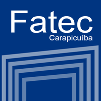
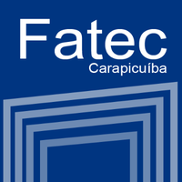

|
Bem-vindo a página final da Aluna Isabella dos Santos Oliveira. Desenvolvida como atividade da disciplina de Programação Web na Fatec de Carapicuíba, trata-se da versão "final" de uma página focada no currículo do aluno, contendo seus dados, experiências e afins. Trata-se da terceira versão da página, que mesmo após o final do ciclo letivo, continuará a ser aprimorada com os conhecimentos adquiridos, pois a área do desenvolvimento requer aprendizado constante e será uma forma rica de medir a evolução do trabalho da aluna. O logotipo ao lado foi feito a partir da tarefa do professor, feito pela aluna Isabella com a ferramenta Paint Tool Sai. A tarefa tinha como requisições: 1. HTML 5: Tags; ID; Class; Imagem; link. 2. CSS 3: Background-color; Background-image; Margin; Padding; Container. Foram desenvolvidas duas páginas, uma com as informações da aluna , e outra com o código desenvolvido utilizando HTML e CSS. 
 

|